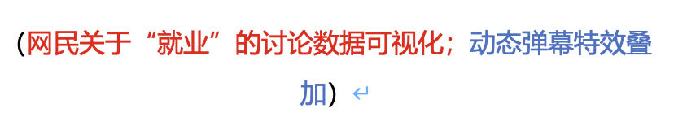
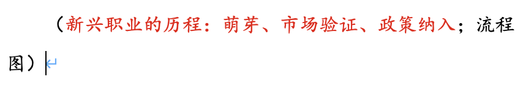
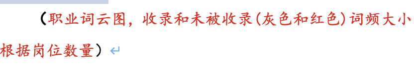
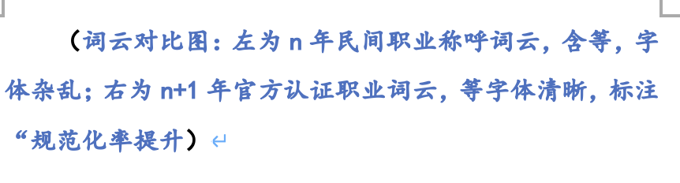
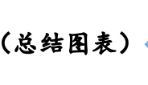
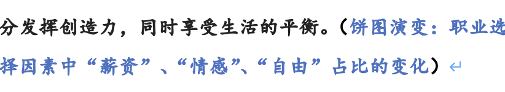
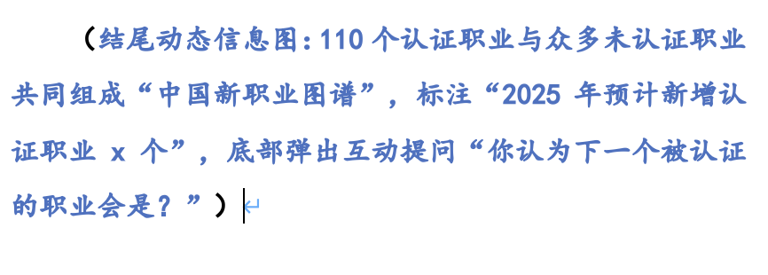

数据镜头下的新职业生存实录
2025年5月，24岁的无人机飞行工程师陆子祥为“魅力重庆”无人机灯光秀提供飞行服务。2024年4月，浙江省首批“民宿管家”职业技能等级证书获得者孟金锦在莫干山民宿芝麻谷引导客人前往餐厅。近年来，新兴职业逐渐兴起，就业结构不断发生改变。我们以权威数据为追光灯，深入分析新兴职业的发展现状、背后动因及面临的问题，展现这场关乎个体命运的职业变革。
01.行业现状
自2019年建立新职业信息发布制度以来，人社部已累计发布了110个新职业。
从行业实践来看，新兴职业通常需经历“市场自发萌芽—企业招聘验证需求—官方纳入职业目录”的路径。目前110个官方认证职业远不足以涵盖市面上的全部新兴职业，多种民间命名岗位尚未拥有“官方姓名”。以“元宇宙场景策划师”（含葬礼策划方向）为例，近3。，但至今仍未被纳入官方职业体系，这类“未认证职业”多停留在前两个阶段。
与此同时，新兴职业在不同地域、不同领域也呈现出不同发展态势。>

02. 驱动密码
新兴职业的爆发并非偶然，而是技术突破、市场需求与政策引导共同作用的结果。
技术、政策、需求的三束追光，共同书写了职业剧本的潜台词。
03.“正名”时间
职业名称的“正名”过程，藏着行业成熟的密码。2022年“银发经济”相关岗位中，38%的招聘信息使用“老年数字辅导员”“银发生活规划师”等民间称呼，直到2024 年 “老年数字服务师”被纳入新职业目录，才形成统一的职业标准。
 04.行业困境
繁荣背后，新兴职业的权益保障仍存短板。数据显示，未认证职业从业者中，68%未签订规范劳动合同，45%无法享受带薪休假，（举例子）。

05. 价值重构
宋龙杰从一线收派件到获评“济南市技术能手”，再到成为首批E类高层次人才，他的逆袭成为数万从业者的缩影。当代年轻人渴望摆脱传统职场的束缚、追求更加灵活的工作方式的态度。他们希望能够在自己的节奏下工作，充分发挥创造力，同时享受生活的平衡。
从电影《她》走出的人工智能数字人训练师，从《聊斋志异》走出的服务犬驯养师……新兴职业的生长史，本质上是个体价值与时代需求的“动态应答”。从技术驱动到政策规范，从权益保障到价值重构，每一组数据的波动，都在书写着就业市场的新规则——而那些尚未被命名的职业，或许正藏着未来社会的模样。
